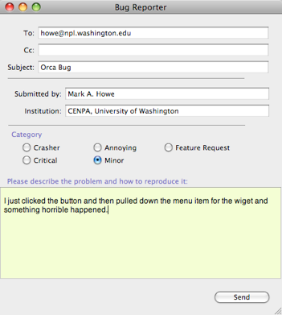

Bug Reporter


ORCA has a couple of general options for helping the tracking down of bugs. Setting the preferences to automatically send crash dumps is one, The Bug Reporter is the other. It is opened from Help/Bug Reporter in the main menu.
Please fill in these fields. ORCA will eventually have an automated bug reporting system and we need more than just a return address to track problems.
The address to send the report is defaulted to the ReportBugsTo field in the project’s info.plist file.
Please describe the bug or problem in as much detail as possible. Especially important is to tell how to reproduce the bug.
Try to place the problem into a category. Please be honest.